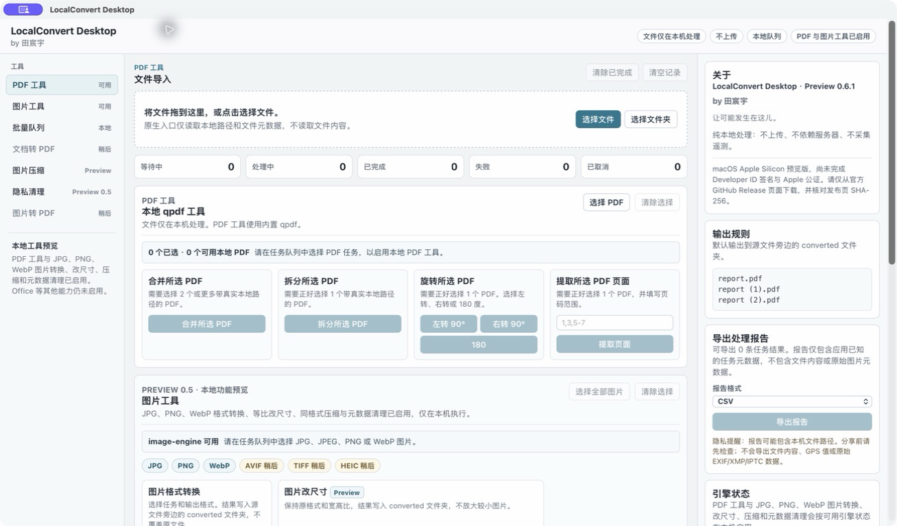
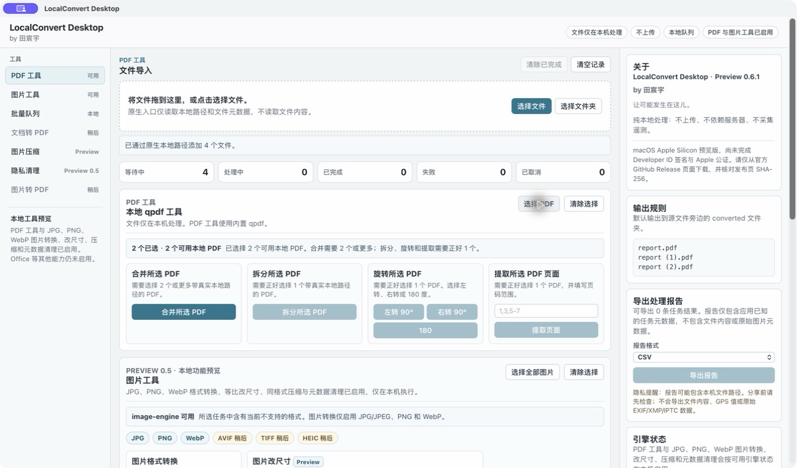
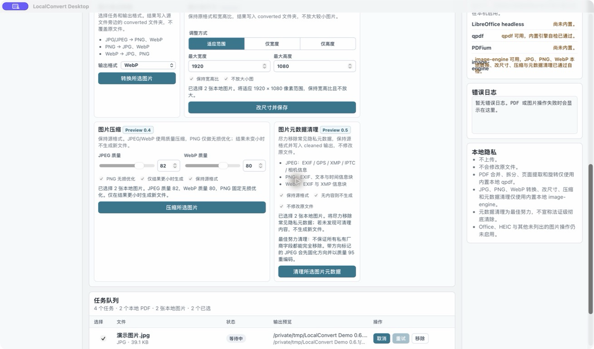
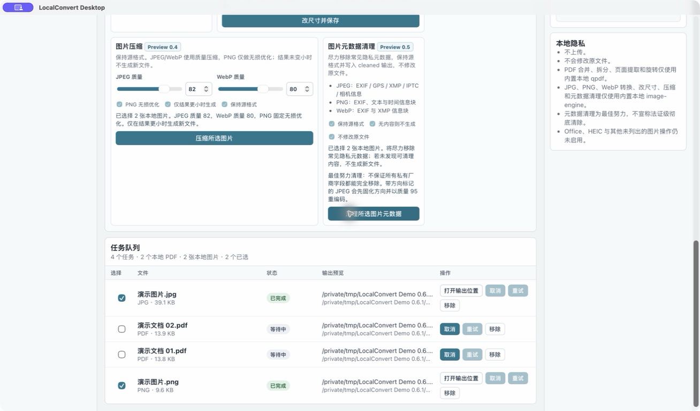
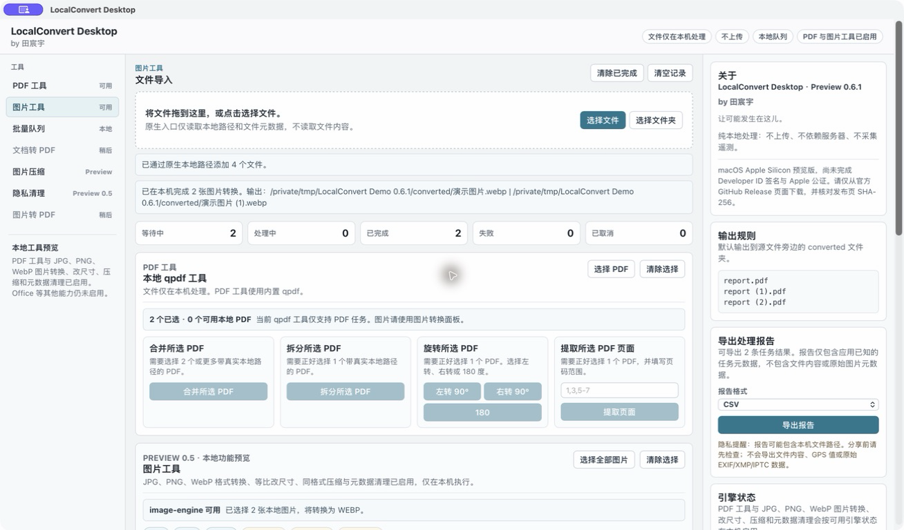
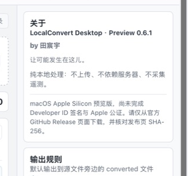

PDF 工具
使用内置 qpdf 合并、拆分、旋转 PDF，并抽取指定页面。
Preview 0.6.1 · macOS Apple Silicon
by 田宸宇
纯本地、无上传、无服务器、无遥测的桌面文件处理工具。
在一个本地工作台中处理 PDF、JPG、PNG 与 WebP。文件不会上传，原文件默认不会被覆盖，已支持的操作无需转换服务器。
当前为未签名或 ad-hoc 签名、尚未完成 Developer ID 公证的 macOS Apple Silicon 预览构建。打开前请核对 SHA-256。
本地桌面工作台
LocalConvert Desktop 面向需要批量处理 PDF 和常见图片的办公用户与个人用户。应用把转换、任务状态、结果导航和报告导出放在同一个克制的中文界面中，优先保证本地执行、可取消和安全输出。
当前能力
只展示当前真实启用的能力，不把未来格式写成现有功能。
使用内置 qpdf 合并、拆分、旋转 PDF，并抽取指定页面。
支持 JPG/JPEG、PNG、WebP 之间已启用的本地转换方向。
支持适应范围、仅宽度和仅高度，保持宽高比且默认不放大。
JPEG/WebP 质量压缩与 PNG 无损优化；未变小时不发布输出。
尽力清理 JPG、PNG、WebP 中常见的隐私元数据，不宣称法证级清除。
导出任务状态和结果摘要，不包含文件内容或原始元数据载荷。
支持真实后台取消、打开输出与报告位置、复制精简错误，以及确认后清空界面任务记录。
Privacy by design
支持的处理由随应用打包的本地引擎完成，不要求账户、云存储或转换服务器。
真实应用画面
截图来自实际 macOS 应用，并使用无个人信息的合成演示文件。






技术实现
前端只调用结构化 Tauri 命令；本地路径、任务生命周期、sidecar 进程和输出发布由 Rust 后端负责。
版本路线
当前边界
安全下载
只从官方 GitHub Release 下载当前 macOS Apple Silicon 预览构建。该 DMG 尚未完成 Developer ID 公证，macOS 可能显示 Gatekeeper 提示。
前往 GitHub Releasea6d31a49a60b00e27375ef41305369c4f8a41fa3f352ee5466e03210842e0597
shasum -a 256 "LocalConvert.Desktop_0.6.1_aarch64.dmg"计算结果必须与上方摘要及 GitHub Release asset digest 一致；不一致时不要打开文件。